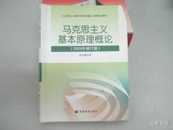

//@麦田:现在倒退得太厉害了。我记得80年代初，《读书》就提出了“读书无禁区”；过了30多年，反而又回去了。教育部长说出这样的话，是一个重要的标志。开倒车。@新京报:【教育部：绝不能让传播西方价值观念教材进课堂】教育部长袁贵仁29日表示，高校教师必须守好政治底线、法律底线、道德底线。加强对西方原版教材的使用管理，绝不能让传播西方价值观念的教材进入课堂；决不允许各种攻击诽谤党的领导、抹黑社会主义的言论在大学课堂出现。（新华网）袁贵仁:高校教师必须守好政治、法律、道德三条底线 
 袁贵仁:高校教师必须守好政治、法律、道德三条底线
袁贵仁:高校教师必须守好政治、法律、道德三条底线